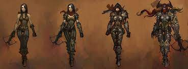

Охотник на демонов – один из шести классов в игре Diablo III. Кредо класса – дальний бой с
использованием арбалетов, взрывчатки, ловушек.Охотники без устали уничтожают демонов,
используя для этого разнообразное оружие дальнего боя. Они бьют издалека, изничтожая монстров,
заполонивших мир, полагаясь на свои луки и смертоносные капканы.Охотники на демонов эффективно
расправляются с большими группами противника, накрывая их залпами стрел и подрывая под ними
мины замедленного действия. Невероятная меткость охотников позволяет им с безопасного
расстояния расправиться с сильными монстрами. Они могут сконцентрироваться на определенной
цели или, отступая, осыпать наступающего противника градом смертоносных стрел.Специализация
в дальнем бою и скудные навыки ближнего боя означают, что для них крайне опасно дать себя
окружить или загнать в угол. Чтобы повысить свои шансы на выживание, они изучают
соответствующие навыки — такие как перекаты и прыжки для ухода от ударов.